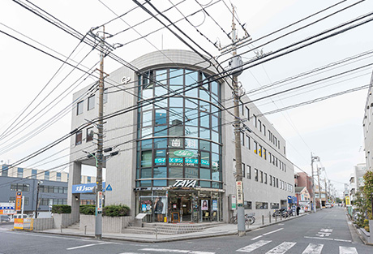
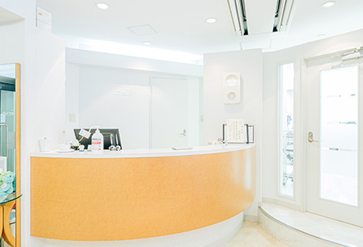
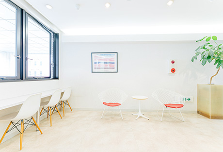
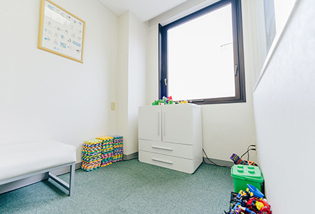
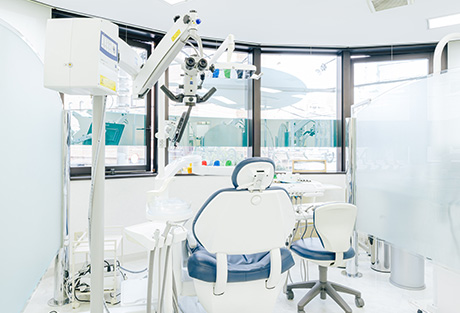
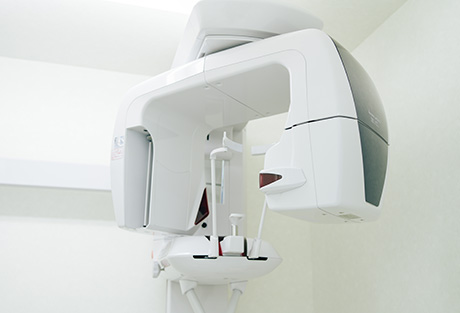
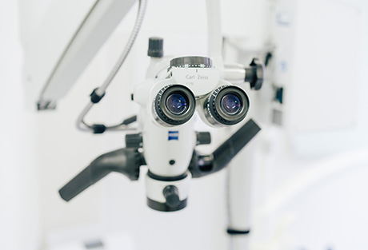
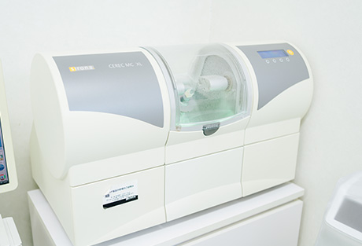
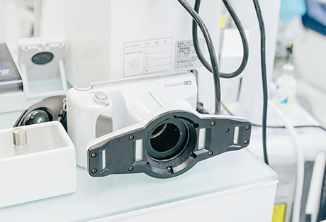
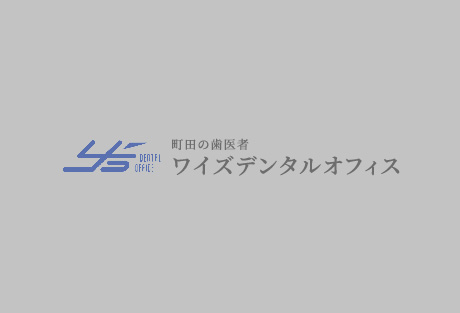

患者様の立場に立った医院づくりを
町田市の歯医者「ワイズデンタルオフィス」は、小田急小田原線「町田駅」から徒歩3分、JR横浜線「町田駅」から徒歩5分と、通勤・通学帰りに立ち寄っていただきやすい場所にあります。こちらでは、患者様の立場に立った医院づくりを心掛ける、当院の医院情報やアクセス、院内などについてご紹介します。

ワイズデンタルオフィスについて
医院情報
※表は左右にスクロールして確認することができます。
| 医院名 | ワイズデンタルオフィス | ||||||||||||||||||||||||
|---|---|---|---|---|---|---|---|---|---|---|---|---|---|---|---|---|---|---|---|---|---|---|---|---|---|
| 院長名 | 杉山 靖史 | ||||||||||||||||||||||||
| 住所 | 〒194-0022 東京都町田市森野1-24-13 ギャランフォトビル2F |
||||||||||||||||||||||||
| TEL | 042-727-6474 | ||||||||||||||||||||||||
| 診療時間 |
※△……土曜午後は18：00まで |
||||||||||||||||||||||||
| 休診日 | 木曜・日曜・祝日 | ||||||||||||||||||||||||
| 診療メニュー | 一般歯科、予防歯科、口腔外科、セラミック治療、小児歯科、矯正歯科、3Mix法、入れ歯治療、ブリッジ治療、インプラント治療、無痛治療、ホワイトニング、歯周病治療、レーザー治療、スポーツ歯科、根管治療、フルマウス治療 など |
アクセス
| アクセス | |
|---|---|
| 最寄り駅 | JR横浜線「町田駅」から徒歩5分 小田急小田原線「町田駅」から徒歩3分 |
医療費控除について
医療費控除とは、生計をともにする1家族（※1）が、1年間に10万円以上（※2）の医療費を支払った場合に、税務申告することで税金の還付が受けられる制度です。申請には、医療機関にかかったときの医療費や薬剤費の領収書が必要ですので、きちんと保管しておきましょう。
※1 別居していても、同一生計内にいれば対象となります。たとえば、下宿をしている大学生の子供などが挙げられます。
※2 年収が200万円以下の場合には、年収の5％となります。
医療費控除の対象となるもの
- 病院、歯科医院、薬局に支払った医療費・薬剤費
- 一般のドラッグストアで購入した市販薬の費用
- 通院にかかった公共交通機関の電車賃 など
※美容目的の治療は対象外です。
医療費控除額の計算方法
[医療費控除額]＝
[1年間に支払った医療費などの総額－10万円（※）]
－[生命保険会社などからの給付金]
※年収が200万円以下の場合には、年収の5％
医療費控除に必要なもの
- 所得税の確定申告用紙
- 医療費控除の内訳書
- 医療費や薬剤費、ドラッグストアで購入した薬などの領収証（電車賃など領収書のないものは、「医療費控除の内訳書」に記載）
- 生命保険会社等から受け取った入院給付金などがある場合には、その明細書類
- 還付金を受け取る銀行口座（申告者本人の口座）
- サラリーマンの場合は、所得税の源泉徴収票（医療費控除の還付申告は、例年１月15日頃から管轄税務署にて受付けられます）
※くわしくは、管轄の税務署にご確認ください。
院内紹介
- 受付
- 
- 白を基調とした、オフィスのエントランスのような明るい雰囲気の受付です。スタッフが笑顔で対応いたします。
- 待合室
- 
- リラックスできるよう配慮した、明るい光が差し込む待合室です。女性向けの雑誌を中心にご用意していますので、自由にご覧ください。
- キッズスペース
- 
- お子様連れの方にも安心して受診していただけるよう、授乳室やキッズスペースをご用意しています。ご家族の方の診療中には、お子様をスタッフがお預かりします。
- 診療室
- 
- 精密な治療を可能にする各種先端機器を備えた診療室です。待合室と同じく、大きな窓から光が差し込み、明るい空間となっています。
- 歯科用CT
- 
- 歯科に特化したCTです。立体的な3Ｄ画像を取得でき、従来の2ＤのＸ線写真ではわからなかった部分まで詳細に把握できます。治療の高精度なシミュレーションも可能です。
- マイクロスコープ
- 
- 肉眼では見えない部分まで2～24倍までに拡大して確認できる歯科用顕微鏡です。撮影した詳細なデータをパソコンに送って寸法計測をしたり、保存管理したりすることも可能です。
- CAD/CAM（セレックシステム）
- 
- 高精度なセラミック製の詰め物・被せ物を、外部の歯科技工所へ依頼することなく院内で設計・製作できるシステムです。治療期間を短縮するとともに費用も抑えられます。
- レーザー治療器
- 
- レーザー光によって治療する機械です。鎮痛・殺菌・消毒などの効果があり、歯ぐきの炎症を抑えたり、痛みを軽減させたり、快復を早めたりすることが可能です。
- エアーフロー
- 
- 重炭酸ナトリウムやグリシンなどの微細なパウダーと、水を圧縮した空気を歯面に吹き付けて汚れを取り除く、歯面清掃器具です。
- P-MAX
- 超音波によって、お口の中の細かな部分まで殺菌・消毒する治療器です。痛みがなく、患者様の負担を極力抑えた歯周病治療・根管治療が可能です。使用するグリーンの液体は、殺菌・消炎作用を持つ「コンクール薬液」です。
- 咬合器
- 患者様の咬み合わせを再現し、理想の咬み合わせを考察できる機器です。これを活用し、一人ひとりに適した治療をご提供します。